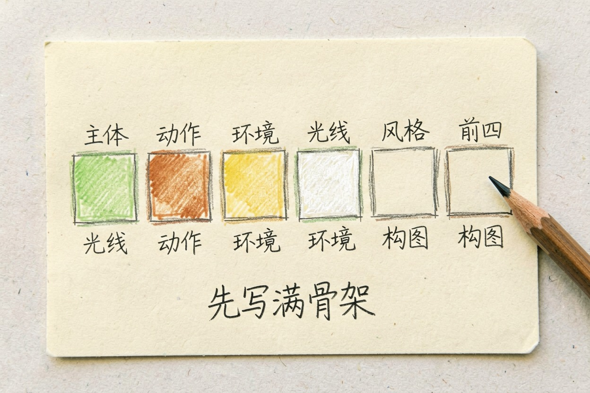
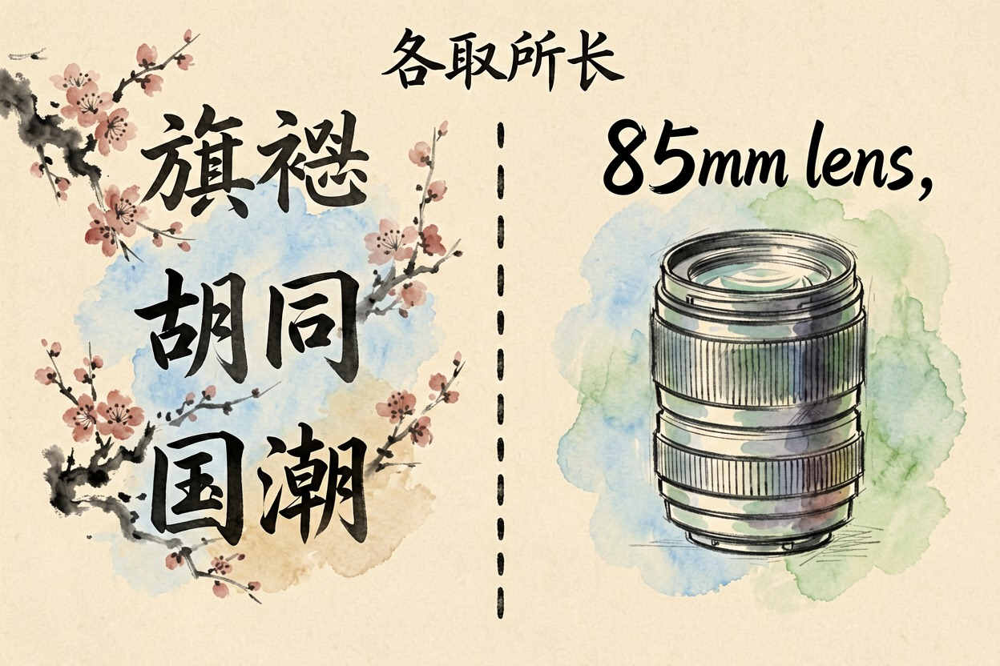
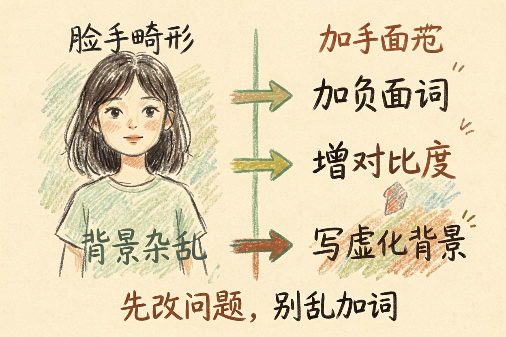
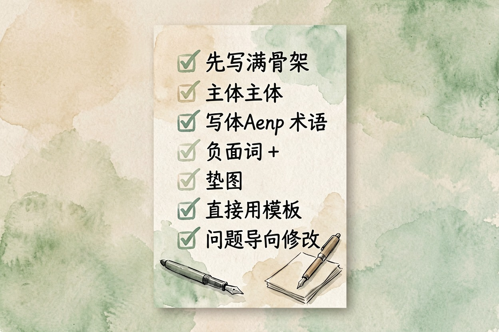

即梦 AI 提示词技巧：中文出图更准
即梦是中文原生的出图模型，可大多数人还是拿写英文提示词那套去喂它，出来的图自然总差一口气。
即梦提示词技巧的基本骨架（先写满前四项）

即梦提示词技巧其实就一句话。先按「主体 → 动作 → 环境 → 光线 → 风格 → 构图」把骨架搭全。再决定哪些词用中文、哪些用英文。比如「一位三十岁亚洲女性，窗边翻书，侧光，胶片质感」就能直接出图。
只写「好看的小姐姐」这种空话，模型不知道她穿什么、在哪儿，只能自由发挥。把前四项写满，成图才可控。指令结构怎么搭，看提示词写法。
即梦提示词技巧：中文怎么写才准

即梦是中文原生模型。主体、场景、动作用中文更稳。国内地标和本土意象也一样，旗袍、胡同、国潮、水墨留白它都认得。这是它的长项。想了解英文模型的写法差异，看Midjourney 提示词技巧。那套思路在即梦常水土不服。
摄影和光影术语建议用英文：85mm lens、cinematic lighting、bokeh、rim light。画质词也用英文更稳。中文对应词识别率不稳。
中文有四个特有的失手点，新手几乎必踩：
- 成语和意境词：「禅意悠远」常被理解成字面画面。不如直接说构图和色块。
- 数量词：「三个人」经常数错。用画面语言兜底，比如「左侧站两人，右侧一人」。
- 一句话堆多种风格：「莫奈风+赛博朋克」会打架。一次只定一个主风格。
- 否定式中文：「不要有人」不如写进负面提示词。模型对否定句一向马虎。
中文文字上图是即梦的相对强项，做国风海报直接把文案写进提示词。
负面提示词和垫图：两招一起用
人像负面词组合：畸形手指、多余肢体、脸型崩坏、模糊、水印。商品图加：变形、比例失调、背景杂乱。通用兜底再加：低分辨率、文字乱码、多余文字。
如果你还在选工具，看可灵和即梦怎么选。这篇讲清了两者的出图取向。
写不准就先垫图。垫一张想要的构图或风格参考，即梦会照着学。比死磕提示词快。固定构图、风格、人物一致性，垫图都比纯文字有效。相似度这类参数具体怎么调，以即梦官网当期说明为准。
即梦提示词技巧：三条可直接抄的模板
下面三条是完整中文长句，改主体就能用。即梦真实出图表现，看即梦 AI 的实际表现。
照片级人像：
一位三十岁亚洲女性，短发，身穿米白色针织衫，坐在靠窗的木桌旁翻书，
午后阳光从右侧打进来，背景是虚化的绿植和书架，胶片质感，浅景深，85mm 镜头。
电商产品图：
一个透明玻璃香水瓶居中摆放，瓶身有金色细闪，纯黑背景，顶部一束聚光灯，
高光锐利，表面反射清晰，商业摄影风格，产品图，8k 细节。
国风海报：
水墨留白构图，远处淡墨远山，近处一枝梅花横斜，画面右上留白处写「立春」二字，
宣纸质感，淡彩，意境清雅，竖版海报。出图不对怎么修

对着问题改比加词有用。先别急着加词：
- 脸或手畸形：把「畸形手指、多余肢体」写进负面词。再垫一张正脸参考图。
- 画面发灰：加「高对比度、饱和鲜明、锐利」，或减少「雾感」类词。
- 和描述不符：检查是否一句话塞了多个风格。先砍到只剩一个主风格。
- 背景杂乱：明确写「纯色背景」或「虚化背景」。别留白让模型自己填。
- 文字乱码：中文标题务必写进提示词正文。别指望模型拼对字形。
即梦的视频能力是另一个话题，本文只讲出图。
别把整段英文模板硬搬过来，那不叫写提示词，那叫给模型出谜语。即梦提示词技巧，归根到底是先写满骨架、再用对中文，成图自然就稳。

本文信息核对于 2026-08-05。AI 产品的价格、免费额度与功能变动频繁，实际以各工具官网当前说明为准。